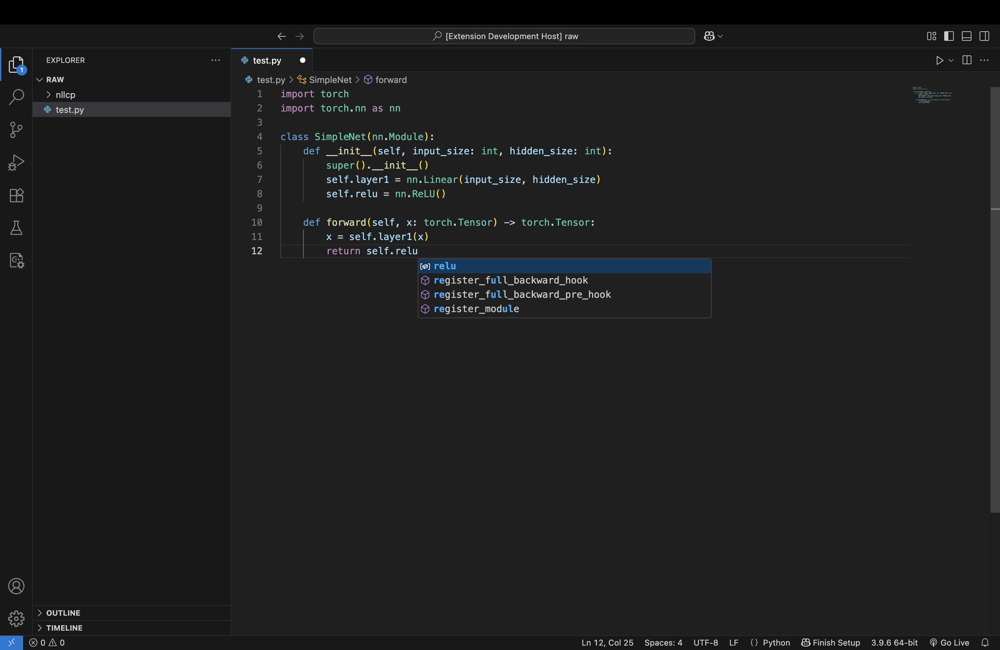

Live Python BPE Tokenizer Playground
Runs the repository's 1,097-token BPE vocabulary (assets/bpe.json: 97 ASCII
characters + 1,000 learned merges) directly in the browser using the same identifier/symbol
pre-tokenizer as ssl_for_code/dataset/bpe.py.
Loading BPE vocabulary...
Beam Search & Confidence-Ratio Pruning Simulator
Compare BeamSearchSimple against BeamSearchLengthy
(score = |t|α · p) and inspect how the VS Code extension's
confidence-ratio filter (pi > r · pi+1) prunes noisy tail
candidates.
Candidate Completion (after return self.rel) |
Raw Prob | Length-Weighted Score | VS Code Status |
|---|
Supported Autoregressive Architectures
All four models share the unified AutoregressiveModel interface
(src, state) -> (logits, new_state) for drop-in training and beam decoding.
| Architecture | Module | Long-Context Mechanism | Default Config |
|---|---|---|---|
| Transformer-XL (Primary) | ssl_for_code/models/xl.py |
Relative multi-head attention + segment-level memory recurrence (mem_len=256) |
6 layers, 8 heads, d=512, AdamW 1.25e-4 |
| Causal Transformer | ssl_for_code/models/transformer.py |
Sinusoidal positional encoding + upper-triangular causal attention mask | 6 layers, 8 heads, d=512, GELU FFN |
| Multi-Layer LSTM | ssl_for_code/models/lstm.py |
Persistent hidden & cell state tuples (h_n, c_n) across chunks |
2 layers, hidden=512, dropout=0.2 |
| Recurrent Highway Network | ssl_for_code/models/highway.py |
Coupled transform/carry gates H * T + s * (1 - T) with recurrence depth L |
2 layers, depth=2, hidden=512 |
VS Code Extension in Action
Real-time Python code suggestions delivered from the local Flask inference server to VS Code.
